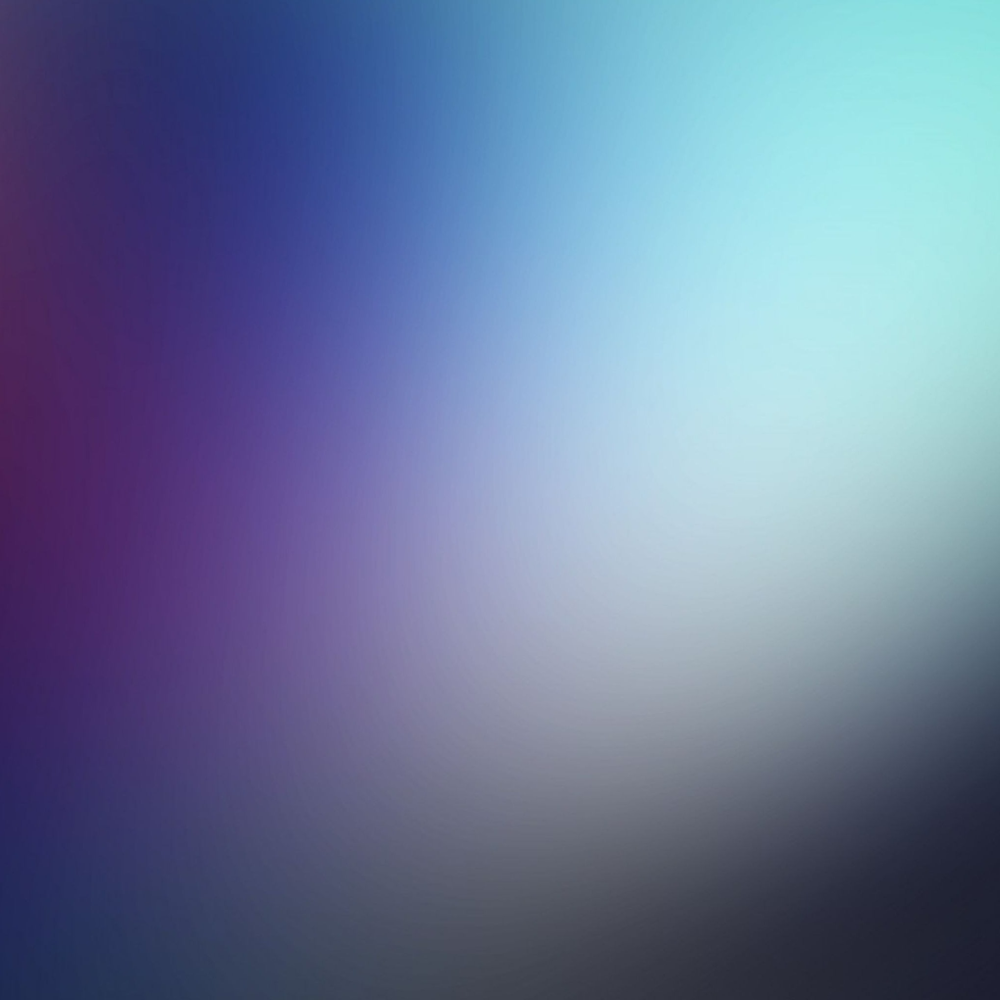

Apolycious
eSh - Moonlight
L.Dre - Steven Universe
fxcked - Goodbye to a world
The girl next door - ON TOP
Gustixa - Happy (ft. Nida Havia)
Burbank - Sorry i like you
Kido - Good Morning
Mario Wav - Pure Imagination
Long Nguyên - Rain
Michael P. - You Belong To Me
Hisohkah - School Rooftop
Marshyn - ilovewenudance
Peng Lexer - NGGYU
César LeBlanc - Earthbound
TRUSH - Death bed
Rensfir - Fallen down
HOME
I know my playlist is weird, but atleast I enjoy it
Copyright © 2021 Apolycious
10:10